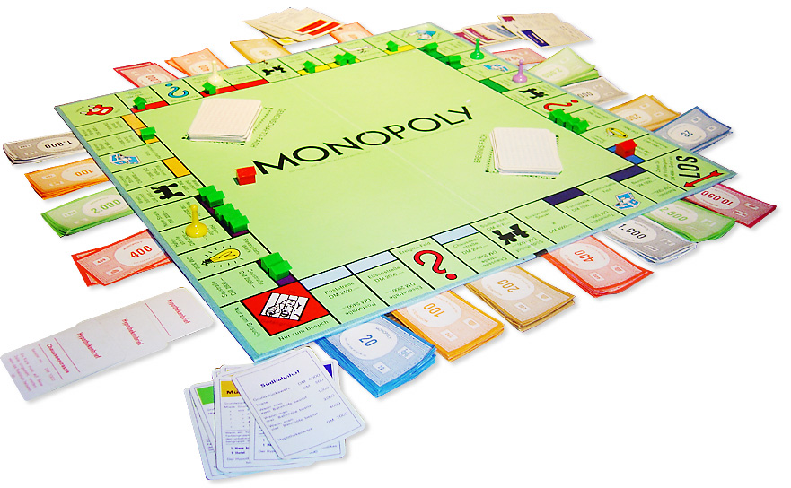

El juego de mesa más vendido de la historia
Antes
Un juego creado con la funcion de servir como herramienta para enseñar las teorias acerca de la justicia social y economica extraidas del estudio titulado Progreso y Miseria de Henry George
Monopoly
Comercializado por vez primera en el año 1936. A lo largo de 80 años, el juego a sufrido una notable evolución. Sus múltiples ediciones y sus tantas versiones han dado pie a que se cambiara desde la caja que lo contiene los elementos que lo componen. Logrando así, mantenerse como el favorito a través de las decadas.

Ahora
Con los años la finalidad del juego cambió para solo disfrutar un buen rato, negociando propiedades y hasta haciendo uso de medios electrónicos para todas las transacciones que requiere el juego.